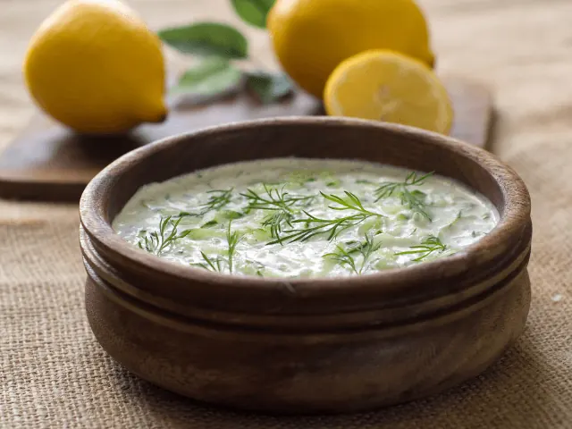
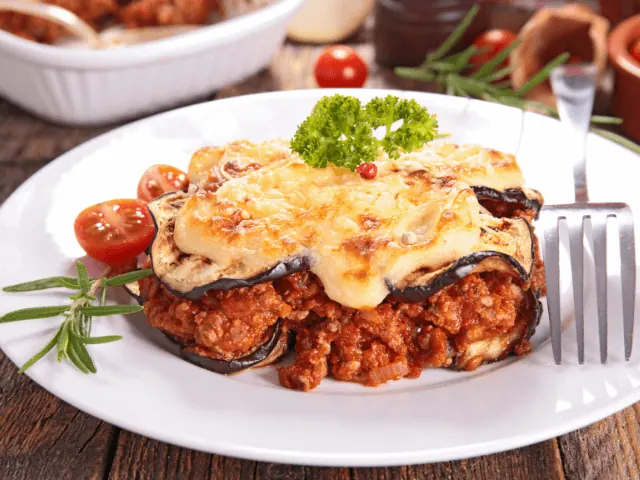
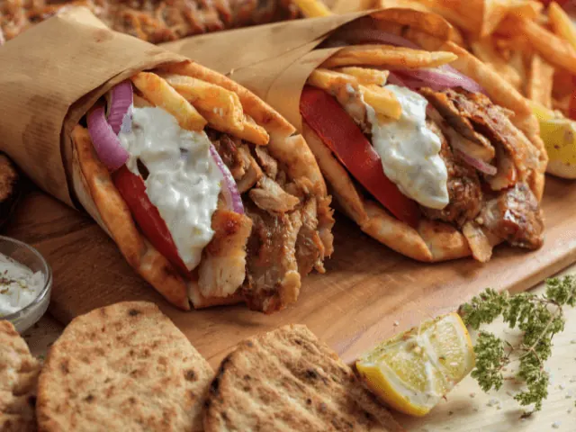

Op Culinaire Ontdekkingsreis? Probeer deze Griekse Restaurants
Gepubliceerd op 15 februari 2023, bijgewerkt op 20 oktober 2023
Onderdeel van de gids Restaurants in Nijmegen

Van een overheerlijke tzatziki tot een verrassende moussaka, de Griekse keuken heeft ons enorm veel te bieden. Ben jij ook een levensgenieter die graag op culinaire ontdekkingsreis gaat? Dan mag de Griekse keuken absoluut niet ontbreken. Ook in Nijmegen zijn er diverse restaurants te vinden die de lekkerste Griekse gerechten aanbieden. Maar welk restaurant in Nijmegen is nu écht een aanrader?
Zoek jij de échte Griekse sfeer op? Dan is restaurant Rhodon de ideale plek voor jou. Mr. Jack’s is een echte aanrader voor iedereen die op zoek is naar een betaalbaar Grieks restaurant. Spreekt Grieks streetfood jou aan? Dan is Zorba’s the place to be.
Ben jij benieuwd welk Grieks restaurant in Nijmegen het meest geschikt is voor jou? Dan raden wij je aan het onderstaande artikel grondig door te nemen. We bespreken namelijk verschillende Griekse restaurants die je absoluut moet toevoegen aan jouw verlanglijstje. We kijken naar het menu en ook nemen we de reviews van gasten in ogenschouw. Dat wil jij niet missen!
Overzicht Griekse restaurants in Nijmegen
De 5 beste Griekse restaurants in Nijmegen
Wil jij de bijzondere culinaire hoogstandjes uit Griekenland zelf ervaren? Daarvoor hoef je de grens helemaal niet over. In ons eigen kikkerlandje vind je ook meer dan genoeg fantastische Griekse restaurant. Zo ook in Nijmegen. Onderstaand duiken we iets dieper in op maar liefst 5 verschillende Griekse restaurants van topkwaliteit.
1. Dionysos
Ben jij groot fan van de traditionele Griekse vlees- en visgerechten? Of heb je er simpelweg fantastische dingen over gehoord? Dan ben je bij Dionysos aan het juiste adres. Dit restaurant ligt in hartje Nijmegen en is dan ook zeer populair onder toeristen die deze stad bezoeken.
Dineren onder het genot van prachtig kaarslicht in een sfeervol restaurant? Dan is Dionysos the place to be. De huiselijke sfeer in dit restaurant is onder veel gasten favoriet. De menukaart is zeer uitgebreid, en ook een heerlijk Grieks drankassortiment ontbreekt hier niet. Wij weten zeker dat deze tent jou niet teleur zal stellen.

2. Rhodon
Rhodon is zonder twijfel het meest spraakmakende Griekse restaurant in Nijmegen. De gemoedelijke sfeer in combinatie met het typische Griekse interieur, zorgen voor een unieke sfeerbeleving. Iedereen die de Griekse cultuur wenst te omarmen, is bij Rhodon dus aan het juiste adres.
De Griekse specialiteiten in restaurant Rhodon zijn een lust voor het oog, en de gerechten zijn daarnaast ook heerlijk van smaak. De kwaliteit van het eten is hoog. Zelfs vegetariërs kunnen hier terecht voor een volwaardig Grieks hoofdgerecht. Er is dus voor ieder wat wils verkrijgbaar in dit veelzijdige restaurant.

3. Mr. Jack’s
Het derde restaurant op onze lijst is Mr. Jack’s. In dit unieke restaurant kun je terecht voor zowel Griekse als Italiaanse klassiekers. Je vindt dit restaurant vlak naast het bekende Hunnerpark in Nijmegen. Het is de ideale plek om met jouw vriendengroep uitgebreid te gaan tafelen.
Naast het feit dat gasten altijd zeer te spreken zijn over de kwaliteit van het eten en de gezellige sfeer, is ook over de prijs niets dan goeds te melden. Het is een zeer betaalbaar restaurant waar je echt waar krijgt voor je geld. Klinkt dat jou ook als muziek in de oren? Dan moet je Mr. Jack’s absoluut gaan uitproberen.

4. Anemos
Restaurant Anemos is een lust voor het oog. De enigszins magische atmosfeer is absoluut kenmerkend. Dit restaurant ligt in Elst, op ongeveer 10 kilometer afstand van het oude stadscentrum van Nijmegen. Met de auto ben je slechts een kwartiertje onderweg.
De menukaart van Anemos laat absoluut niets te wensen over. Van een gyros schotel tot een Grieks vegetarisch gerecht, de mogelijkheden zijn eindeloos. Anemos kenmerkt zich met kwaliteit, veelzijdigheid en een vriendelijke bediening. Je zit hier dus zonder twijfel goed voor een gezellige avond.
5. Zorba’s streetfood
Ook Zorba’s streetfood mag absoluut niet ontbreken in onze lijst. Hier ben je aan het juiste adres voor een snelle Griekse snack. Het restaurant is gevestigd in het centrum van Nijmegen. Het is dus ook de ideale plek om neer te strijken na een dagje cultuur snuiven in deze bruisende stad. Het leuke aan deze Griekse streetfood tent? Hij is geopend tot in de late uurtjes. Dus ook een fantastische plek om na het stappen de avond af te sluiten.
Een broodje gyros is zonder twijfel de bestseller op het menu. Maar ook een Griekse schotel of een hartige spanaki crêpe met kaas behoren tot de mogelijkheden. Streetfood dompelt jou op een unieke manier onder in de Griekse cultuur. Dat zul je zeker merken wanneer je Zorba’s bezoekt. Je geniet hier met volle teugen van al het speciaals dat de Griekse keuken te bieden heeft.